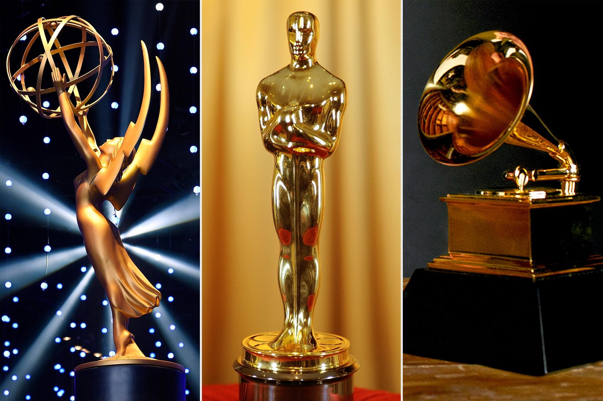

Awards Shows!
Awards season for tv and movies just wrapped up with the Oscars ceremony two weeks ago. Awards season always seems to be monumental in pop culture, sparking memes like the Will Smith slap at the Oscars a few years ago, or fashion statements. Personally, I enjoy scrolling on my TikTok feed after awards ceremonies and seeing commentary on what celebrities wore to these events.
My favorite moments from an awards ceremony were 2 Oscars ceremonies ago, when Michelle Yeoh and Ke Huy Quan won the Best Actress and Best Supporting Actor awards for their work in the film Everything Everywhere All At Once. I had grown up watching Michelle Yeoh in my parents' favorite Asian films, including Crouching Tiger Hidden Dragon. Seeing her win the most prestigious acting award in Western media as the first Asian actress to do so was incredibly heartwarming and moving. Ke Huy Quan's speech was also incredibly emotional, as he looked into the camera and spoke to his mom who he said was watching from home. Any viewer could feel his joy and pride when he shouted “mom, I just won an Oscar.”
Awards season reminds viewers that the actors that played their favorite characters are actually just artists that grew up with dreams. It shows that they are also human, and that if they can achieve their dreams on the silver screen then maybe we can too.
Top Award Shows for TV and Movies
- Academy Awards (aka the Oscars, Movies)
- The Emmys (TV)
- The Golden Globes (TV and Movies)